Reference stills for the Third Jam entry, scored for Unreal Engine 5.9 on one RTX 4090 with agents doing the work in about 20 hours of device-B time.
docs/PREP-CHECKLIST.md.
These images are reference studies only. They are never imported into any Unreal project, never used as textures or tracing sources, and never shipped. Under contest rule 7(h) only tools, prompts and scripts may exist before the start; every shipped asset is made during the contest period. Generated 2026-11-11 with Codex image generation; prompts carry no brands, artists or franchises.
| Direction | Theme flexibility | Buildable in 20 h | Striking in 60 s | Performance | Readability | Total |
|---|---|---|---|---|---|---|
| D1 clean stylized toy diorama | 5 | 5 | 3 | 5 | 5 | 23 |
| D2 painted cel-shaded | 4 | 3 | 4 | 4 | 4 | 19 |
| D3 neon night, high contrast | 3 | 4 | 5 | 2 | 3 | 17 |
| D4 tilt-shift miniature | 4 | 3 | 5 | 4 | 3 | 19 |
Scores are one reviewer's judgement from the stills and general engine knowledge; nothing is measured. A gap of 2 or less is a tie. A generated still shows a finished look and hides the cost of the set dressing, which in the engine is the expensive part, not the arena.
Saturated flat-ish materials, soft global illumination, strong rim light, glossy accents. Range is carried by palette and light, not geometry.
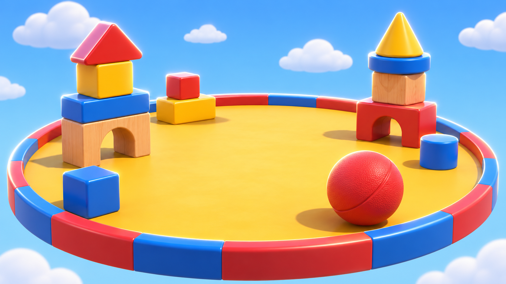
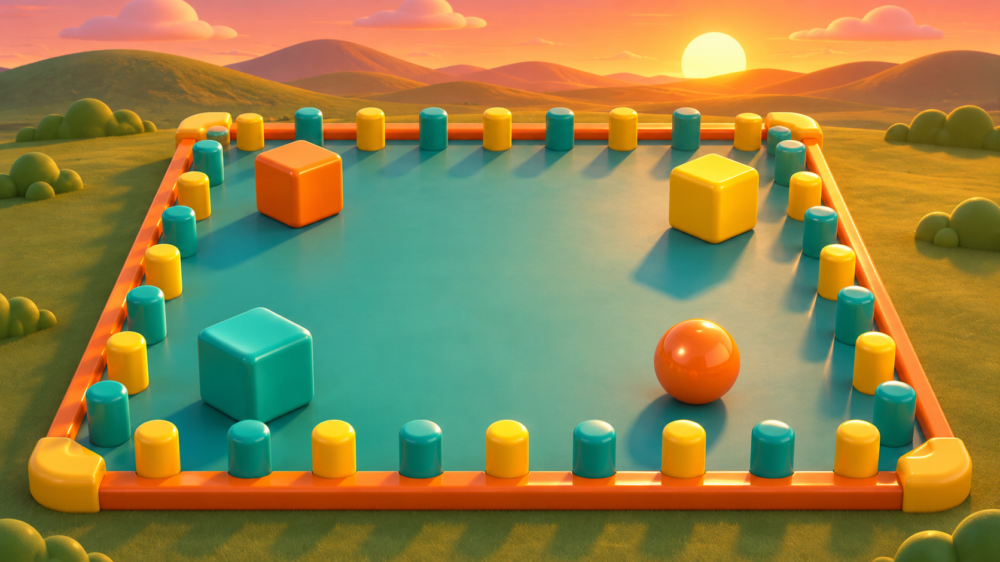
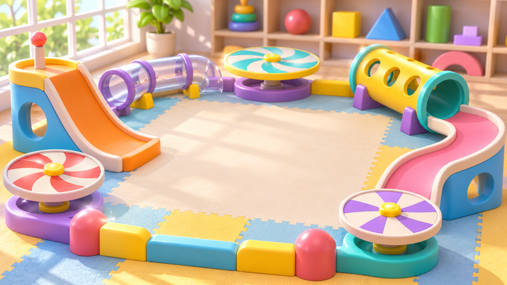
low A handful of parametric master materials (flat tint, fresnel rim, clearcoat gloss), one directional light plus sky light with Lumen GI, bloom, a mild grade. Primitives, no Nanite needed.
low Software Lumen at medium scalability, few draw calls, no ray tracing.
Procedural bevelled primitives by script, a few generated hero props, optional stylized Fab packs (ledgered). Agents can make the chunky shape without hand modelling.
Best of the four: theme skin tokens map straight onto material parameters (tint, gloss).
High. Only a dark or gritty theme fights it.
Reads as generic or "mobile" if it stays plain; needs strong colour design, a good sky and soft shadows.
Hand-painted textures, visible ink-like outlines, limited palette. Strong palette discipline makes the interactive objects stand out.
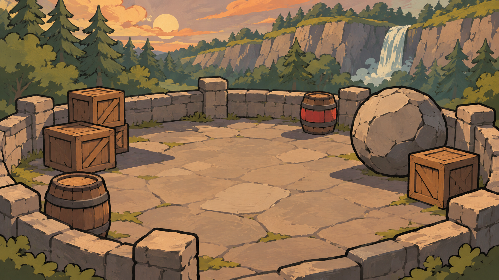
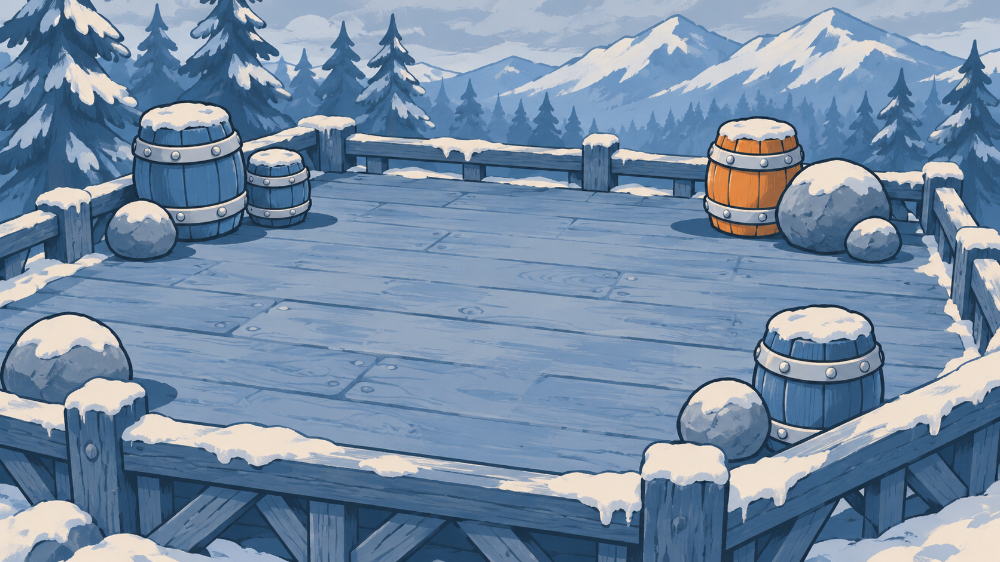
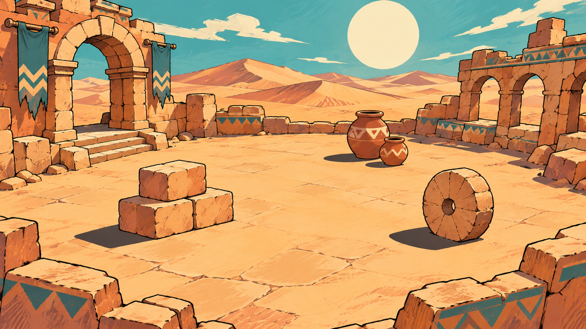
medium Outline post-process (depth and normal edges or custom stencil) and a toon ramp are 3 to 4 hours; consistent painted textures across every prop are the long tail, and agents drift in style between assets.
low to medium Edge detection is cheap at 1080p, noisier and costlier at high resolution or with overlapping translucency.
Outline and ramp are engine-side. Painted texture sets generated in the jam, or Fab painted packs. A backdrop of a few layered cards suits a fixed three-quarter camera.
Palette swaps rebuild the mood, but each theme needs textures redone, which live skinning cannot do.
Medium to high.
Outline artifacts on thin geometry and particles; style drift between assets.
Dark scene, emissive trim, wet reflective floor, glow and haze. The most striking stills of the set, and the most expensive to keep readable.
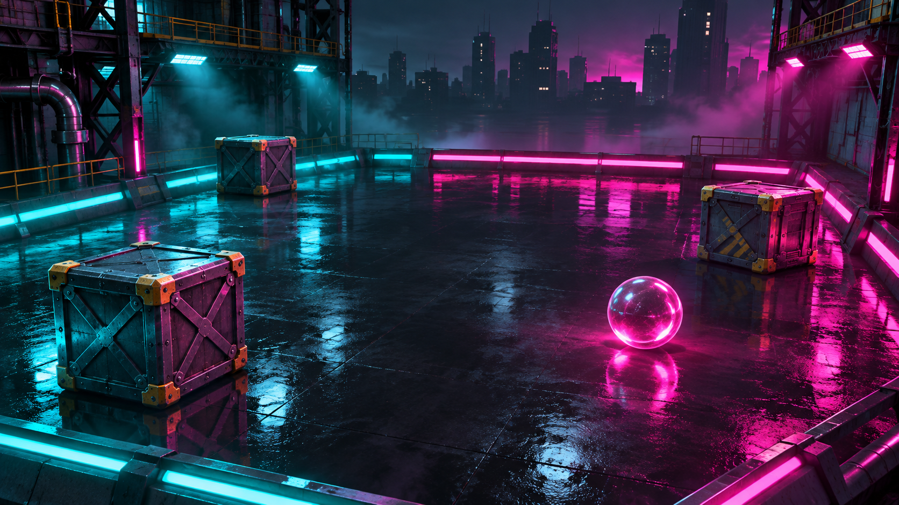
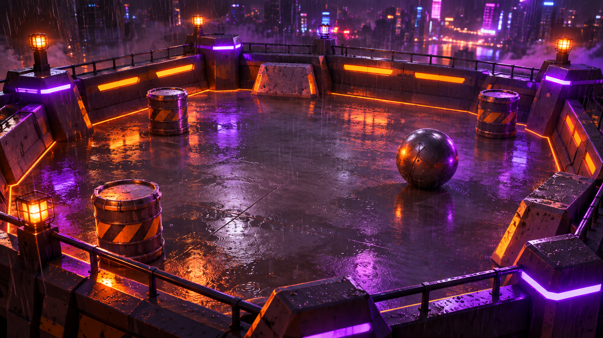
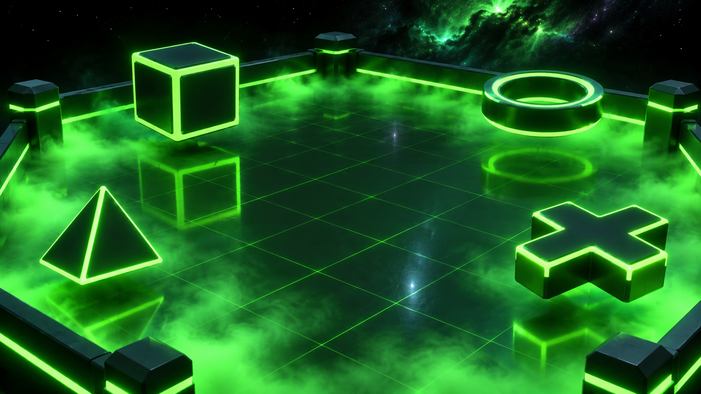
medium The first image of the look takes about 4 hours (emissive materials, Lumen GI from emissives, glossy floor, height and volumetric fog, bloom, grade); tuning exposure so gameplay stays readable and reflections stay stable takes the rest.
high on a mid-range judge machine: ray-traced reflections, volumetric fog and many emissive lights add up. Needs a scalability fallback (software Lumen, fake reflection card, reduced fog) that makes the floor look far worse than the study. Test on a weaker GPU by H12.
Mostly procedural: emissive trim on bevelled primitives, a tiling wet-floor material, a skybox or card skyline. Fab sci-fi kits are plentiful.
True path tracing is a stills-and-video option on device B only; the shipped build cannot rely on it (see docs/NVRTX-NOTES.md).
Low to medium. It is a night look; a bright, cheerful or natural theme works against it.
Dark scenes hurt readability and video compression (banding at 1080p); the stills are more beautiful than a Lumen-lit real scene will be.
Soft clay-like materials, shallow depth of field, warm daylight. The look is carried by the depth-of-field band and warm light more than by materials.
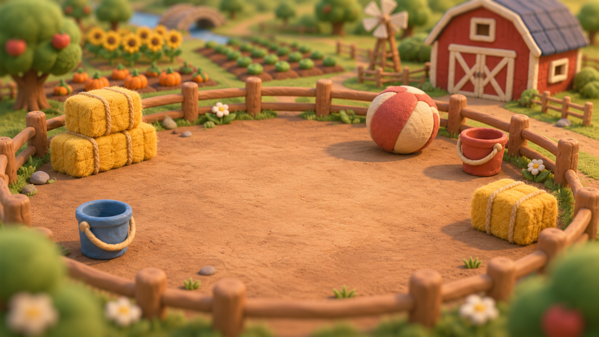
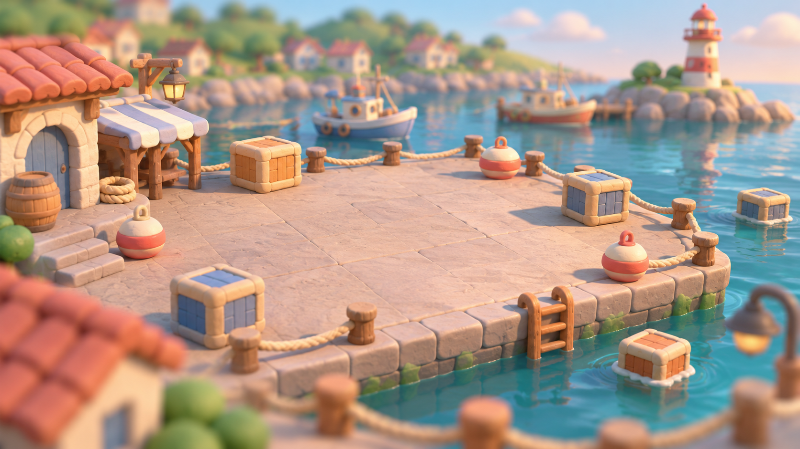
medium The post effect (a screen-space blur band on a fixed three-quarter camera, cheaper and more predictable than cinematic DoF) and the clay material (rough, low specular, noise normal for fingerprints, optional wrap lighting) are about 4 hours; set dressing is the open-ended part, capped by a fixed camera that only needs a ring of props.
low to medium A blur band is cheap; real bokeh DoF on a moving camera is not. Keep the camera angle fixed.
Arena and chunky objects procedural; the dressing that sells the miniature (barn, boats, trees, fences) from Fab stylized packs or generated meshes, all ledgered. Without dressing it drops to "blurred D1".
Works for anything that can be a tiny world; the warm daylight is a bias but the post effect works under any light.
Medium to high.
Blur at the top and bottom hides edge information gameplay may need, so the playable area must sit inside the sharp band; a moving or zooming camera breaks the illusion.
D1 as the base, D4 as the layer on top. They share one pipeline (chunky bevelled primitives, soft Lumen light, a few parametric master materials), so choosing D1 in hour 1 keeps D4 open: the tilt-shift band, warm grade and a clay roughness variant are post-process and material changes that can be tried in about an hour once the greybox exists, and they are the cheapest way to turn a plain D1 into a video that stands out. D1 also maps most directly onto the Designer's theme skin tokens.
Rate each direction above (base / layer / fallback / no), add a note, then copy the line into docs/PREP-CHECKLIST.md under "Art direction". Nothing here is sent anywhere; the page only builds the text. Ratings are remembered in this browser only.